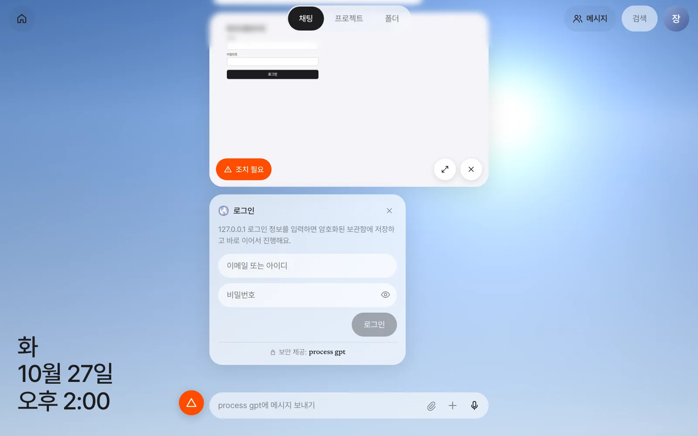
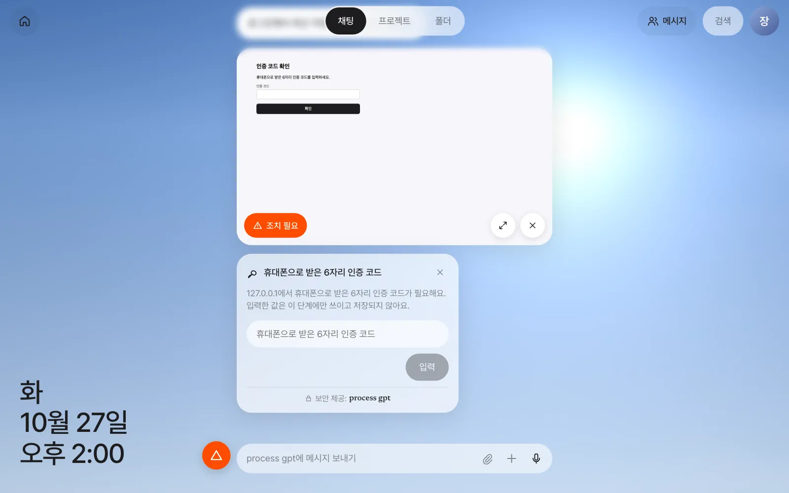
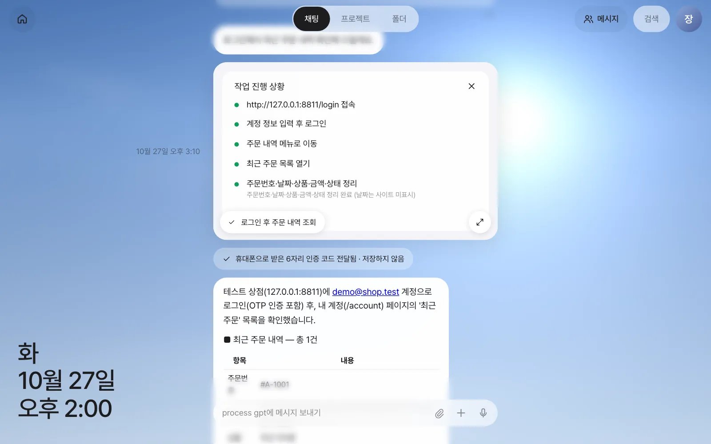
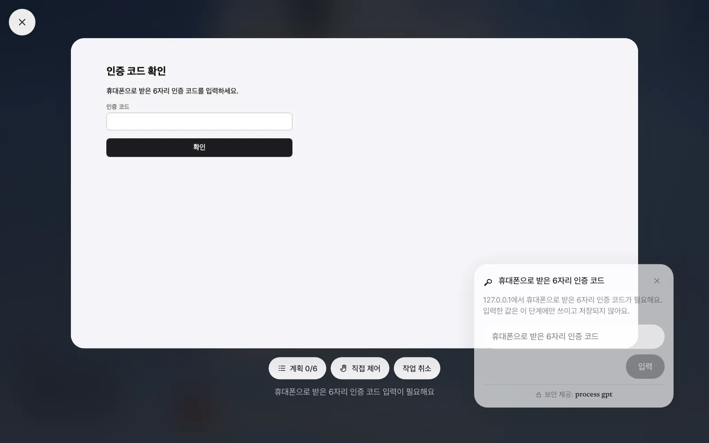
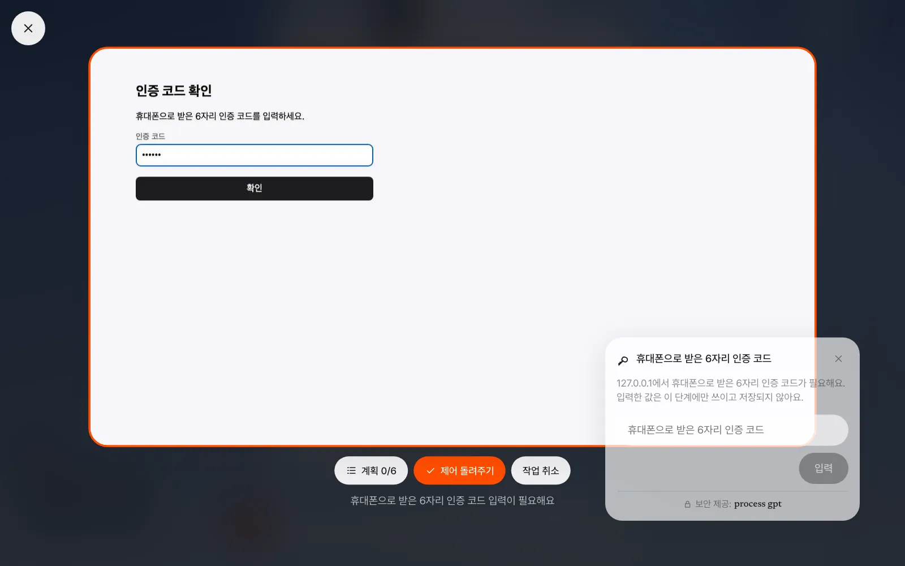
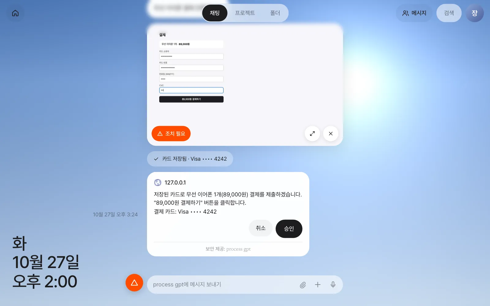
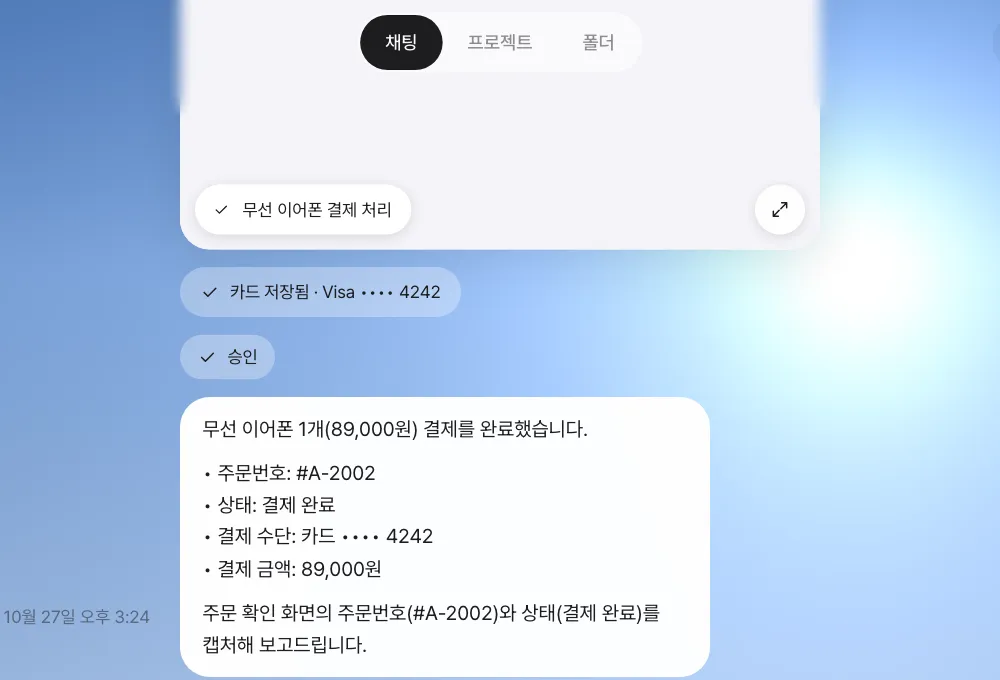
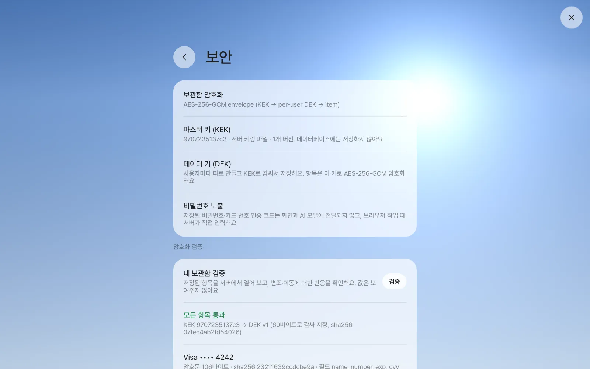
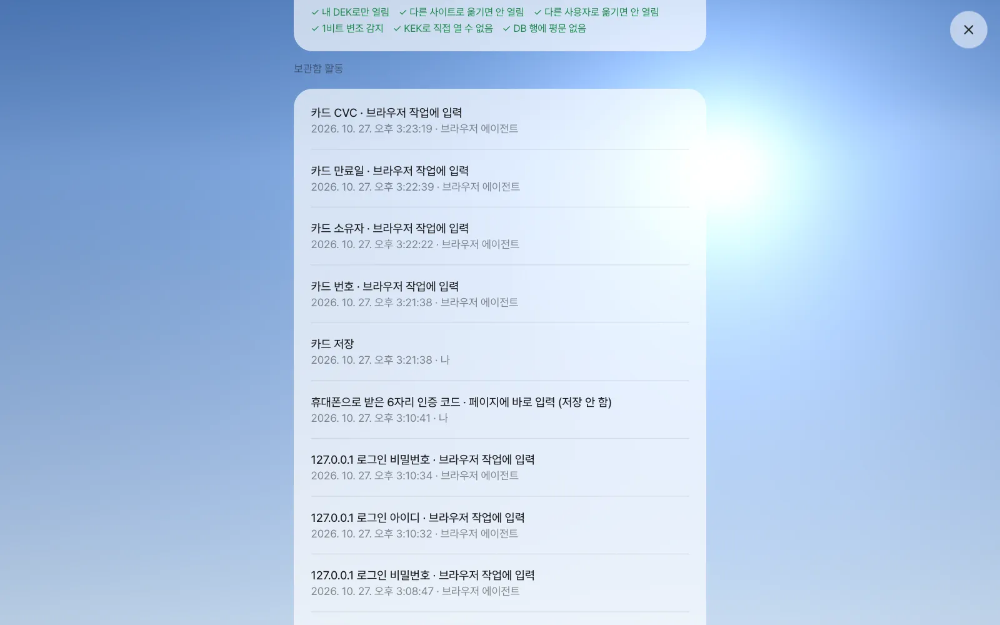

로그인이 필요한 사이트의 일을 비서에게 맡깁니다. 비서가 브라우저를 직접 조작하는 모습을 실시간으로 보고, 계획을 확인하고, 필요하면 손을 넘겨받아 직접 입력합니다. 비밀번호·카드 번호·인증 코드는 보관함이 맡아 AI 모델에게는 한 번도 보이지 않는다는 것, 그리고 두 겹의 열쇠로 그것을 어떻게 지키는지까지 확인합니다.
왜 브라우저 에이전트인가#
5장의 메일은 비서가 바로 읽을 수 있었습니다. 하지만 거래처 포털에서 세금계산서를 발행하고, 자재몰에서 주문 내역을 확인하고, 관리 콘솔에서 설정을 바꾸는 일은 프로그램끼리 연결할 통로가 없어 로그인한 브라우저로만 할 수 있습니다. 브라우저 에이전트는 서버에 있는 브라우저를 여러분 대신 조작합니다. 페이지를 읽고, 누르고, 입력하고, 결과를 정리해 줍니다.
걱정되는 것은 두 가지입니다. 비밀번호를 AI에게 줘도 되나? 그리고 AI가 마음대로 결제하면? Process GPT Lite는 이렇게 답합니다.
| 걱정 | 장치 |
|---|---|
| 비밀번호·카드 번호가 AI에게 간다 | 보관함이 값을 맡고, 입력은 서버가 직접 합니다. 모델은 “여기에 비밀번호를 넣어”라고만 말할 수 있습니다 |
| 화면 사진에 비밀이 찍힌다 | 모델이 보는 페이지 내용에서는 비밀 칸의 값을 지우고, 화면 사진에서는 비밀 칸을 검게 가립니다. 실시간 화면에서도 카드 칸은 점으로 보입니다 |
| 결제·전송·삭제를 마음대로 한다 | 그런 동작 직전에는 반드시 승인 카드를 띄우고, 사람이 「승인」해야 진행합니다 |
| 일이 엉뚱하게 흘러간다 | 실시간 화면과 계획을 보고 있다가 언제든 「직접 제어」로 넘겨받거나 「작업 취소」 |
연습용 사이트 — 테스트 상점#
이 장은 저장소에 들어 있는 테스트 상점으로 실습합니다. 이메일·비밀번호 로그인, 휴대폰 인증 코드, 카드 결제 화면이 있는 작은 연습용 사이트이고, 실제 돈은 오가지 않습니다. 설치할 때 받은 저장소 폴더에서 이렇게 엽니다(Node.js가 필요합니다).
node server/test/fixtures/shop.mjs 8811
# test shop on http://127.0.0.1:8811 (login demo@shop.test / otp 246810)
| 항목 | 값 |
|---|---|
| 주소 | http://127.0.0.1:8811 |
| 로그인 | demo@shop.test / Correct-Horse-42 |
| 휴대폰 인증 코드 | 246810 |
| 연습용 카드 | 4242 4242 4242 4242, 만료 12/30, CVC 123 |
설치 번들(Docker)에서는
설치 번들에서는 브라우저가 서버 컨테이너 안에서 돌므로, 내 PC에서 띄운 테스트 상점은 127.0.0.1 대신 host.docker.internal:8811처럼 컨테이너에서 보이는 주소로 부르세요. 사내망의 실제 사이트에 쓸 때도 서버가 그 주소에 닿을 수 있어야 합니다.
따라 하기 1 — 처음 가는 사이트에 로그인#
입력창에 이렇게 보냅니다.
테스트 상점(http://127.0.0.1:8811/login)에 로그인해서 내 최근 주문 내역을 알려줘.
비서가 “로그인해서 최근 주문 내역 확인해 드릴게요” 하고, 채팅에 작업 카드가 생깁니다. 카드에는 서버 브라우저의 화면이 실시간으로 비칩니다. 입력창 위 상태 줄에는 “127.0.0.1 여는 중”, “페이지 읽는 중”처럼 지금 하는 동작이 나옵니다.
에이전트가 비밀번호 칸을 만나면 멈추고 로그인 카드를 올립니다. 처음 가는 사이트라 보관함에 저장된 로그인이 없기 때문입니다. 작업 카드에는 주황색 「조치 필요」가, 입력창 왼쪽에는 주황색 경고 버튼이 생깁니다. 경고 버튼을 누르면 답해야 할 카드로 화면이 옮겨 갑니다.

- 로그인 카드에
demo@shop.test와Correct-Horse-42를 넣고 「로그인」을 누릅니다. - 카드가 “127.0.0.1 로그인 저장됨”으로 바뀌고, 서버가 저장한 값을 페이지에 직접 넣어 로그인합니다.
- 사이트가 휴대폰 인증 코드를 묻자, 이번에는 인증 코드 카드가 뜹니다. “입력한 값은 이 단계에만 쓰이고 저장되지 않아요.” 일회용 값은 보관함에 남기지 않습니다.
246810을 넣고 「입력」을 누릅니다.

1분 남짓 지나 작업이 끝나면 카드 아래쪽 알약(작업 제목)을 눌러 계획을 볼 수 있습니다. 에이전트가 처음에 세운 단계와, 끝낸 단계의 초록 점, 단계마다 남긴 메모가 보입니다. 그 아래에는 결과 요약이 옵니다.

확인할 것: 요약에 주문 #A-1001 무선 이어폰 89,000원 (배송 중) 이 있고, “휴대폰으로 받은 6자리 인증 코드 전달됨 · 저장하지 않음” 줄이 있으면 됩니다. 같은 요청을 한 번 더 보내 보면, 이번에는 로그인 카드 없이 보관함에서 자동으로 로그인하고 인증 코드만 묻습니다.
따라 하기 2 — 크게 보고, 직접 제어하기#
작업 카드의 확장 버튼(↗)이나 「조치 필요」를 누르면 화면 전체로 크게 봅니다.

| 버튼 | 하는 일 |
|---|---|
| 「계획 n/m」 | 단계 목록을 펼칩니다 |
| 「직접 제어」 | 내가 넘겨받습니다. 화면 테두리가 주황색이 되고, 화면을 누르거나 키보드로 입력하면 그대로 서버 브라우저에 전달됩니다 |
| 「제어 돌려주기」 | 다시 에이전트에게 넘깁니다. 에이전트는 페이지를 다시 읽고 이어서 합니다 |
| 「작업 취소」 | 작업을 멈춥니다. 채팅에 “작업을 취소했어요.”가 남습니다 |
직접 제어는 캡차처럼 사람이 풀어야 하는 화면이나, 에이전트가 같은 곳에서 헤맬 때 씁니다. 같은 요청을 한 번 더 보내고, 인증 코드 화면에서 「직접 제어」를 누른 뒤 화면 안의 코드 칸에 직접 246810을 입력해 봅니다.

Enter로 확인한 뒤 「제어 돌려주기」를 누르면, 쓰지 않은 인증 코드 카드는 “요청이 만료됐어요”로 바뀌고 에이전트가 로그인된 페이지에서 이어 갑니다.
직접 입력한 로그인도 보관함으로
직접 제어 중에 로그인 폼이나 카드 폼에 값을 넣고 제출하면, 보관함이 그 값을 알아채 “저장할지 확인해 주세요” 카드를 올립니다. 「저장」을 누르면 다음부터는 에이전트가 그 값을 씁니다. 저장하지 않으면 버립니다.
작업은 한 번에 하나씩
현재 버전에서는 브라우저가 사용자마다 하나라서, 작업이 끝나기 전에 다른 브라우저 작업을 시키면 앞 작업이 「조치 필요」에 멈춘 채 남을 수 있습니다. 앞 작업이 끝나거나 「작업 취소」한 뒤 다음 일을 시키세요. 에이전트가 단계를 다 하지 않고 끝내거나 엉뚱한 요약을 낼 때도 있으니, 계획의 초록 점으로 실제로 한 일을 확인하고 이상하면 같은 요청을 다시 보내세요.
따라 하기 3 — 카드로 결제하고 승인하기#
테스트 상점(http://127.0.0.1:8811/checkout)에서 무선 이어폰 1개를 내 카드로 결제해 줘.
보관함에 카드가 없으므로 이번에는 결제 카드 카드가 뜹니다. 소유자 이름, 카드 번호 4242 4242 4242 4242, 12/30, 123을 넣고 「카드 저장」을 누릅니다. 카드는 “카드 저장됨 · Visa •••• 4242”로 바뀌고, 서버가 결제 폼을 채웁니다.
결제 버튼을 누르기 직전, 에이전트는 반드시 멈추고 승인 카드를 올립니다. 무엇을, 얼마에, 어느 카드로 하는지가 적혀 있습니다.

「승인」을 누르면 결제를 마치고 주문 번호를 알려 줍니다. 「취소」를 누르면 결제하지 않습니다.

확인할 것: 승인 카드에 금액과 Visa •••• 4242 가 있고, 승인 뒤 요약에 새 주문 번호(이번 실행은 #A-2002)가 있으면 됩니다. 카드 번호 전체는 채팅 어디에도 보이지 않아야 합니다.
승인은 승인 카드로
결제·전송·삭제 직전의 승인은 지시에 쓰지 않아도 기본으로 걸립니다. 현재 버전에서는 “승인을 받아”라고 지시에 넣으면 에이전트가 결제 화면까지 가지 않고 “승인해 주시면 진행하겠습니다”라는 보고만 하고 끝날 수 있으므로(계획의 초록 점이 비어 있습니다), 위처럼 할 일만 말하고 승인은 승인 카드로 하세요.
빠른 판단 — 큰 모델을 덜 부르는 법#
브라우저 작업은 동작마다 큰 모델을 부릅니다(화면 사진까지 읽으므로 비쌉니다). 그래서 짧은 판단은 작은 판단 모델에게 먼저 묻습니다(4장의 대화 맥락 판단과 같은 모델입니다).
| 묻는 것 | 확실하면 |
|---|---|
| 이 페이지는 아직 불러오는 중인가? | 큰 모델에게 묻지 않고 잠깐 기다립니다(상태 줄 “페이지 기다리는 중”) |
| 로그인 벽이나 캡차인가? | 사람이 없는 작업이면 무리하지 말라고 미리 알려 줍니다 |
| 지금까지 메모한 사실로 목표에 다 답할 수 있나? | 더 돌아다니지 않고 바로 정리해 끝냅니다 |
판단 모델이 확신할 때만 이렇게 하고, 아니면 평소대로 큰 모델이 판단합니다. 개발팀이 재 본 바로는 작업 한 번에 큰 모델을 부르는 횟수가 약 21% 줄었습니다. 이 기능은 대화 맥락 라우터가 연결된 서버에서만 켜지므로, 현재 설치 번들에서는 기본으로 꺼져 있습니다.
보관함 — 비밀은 어디에, 어떻게#
브라우저 작업 중 저장한 로그인과 카드는 보관함에 있습니다. 직접 넣을 수도 있습니다.
| 어디 | 무엇 |
|---|---|
| 설정 › 계정 | 연결(Google 등), 사이트 로그인, API 키. 「+ 로그인 추가」, 「+ API 키 추가」 |
| 설정 › 지갑 | 결제 카드. 화면엔 카드사와 끝 네 자리, 저장일, 사용 횟수만 |
| 설정 › 보안 | 암호화 방식, 마스터 키 정보, 「검증」, 보관함 활동 기록 |
저장된 비밀번호는 다시 보여 주지 않습니다. 「설정 › 계정」에서 로그인을 누르면 새 값으로 바꾸기만 됩니다.
금고 안의 금고 — 마스터 키와 데이터 키#
보관함은 봉투 암호화를 씁니다. 금고 비유로 보면 이렇습니다.
- 비밀번호·카드 같은 항목은 사용자마다 따로 만든 열쇠, 데이터 키(화면에는 DEK)로 잠급니다.
- 그 데이터 키는 다시 마스터 키(화면에는 KEK)로 잠가서 데이터베이스에 둡니다.
- 마스터 키는 데이터베이스 밖에 있습니다 — 서버의 키 파일이나, 설치 번들이면 설치 폴더의 설정 파일
.env(1장).
그래서 데이터베이스 백업이 통째로 새어 나가도 마스터 키 없이는 아무것도 열 수 없습니다. 항목은 그 사용자·그 사이트에 묶여 잠기므로, 다른 사용자나 다른 사이트의 자리로 옮겨 놓아도 열리지 않습니다. 마스터 키를 바꾸거나 데이터 키를 새로 만드는 일은 운영자가 합니다(25장).
「설정 › 보안」의 「검증」을 누르면, 서버가 내 항목을 실제로 열어 보고 변조·이동에 어떻게 반응하는지 확인합니다. 값은 보여 주지 않습니다.

검증 결과 아래의 보관함 활동에는 누가 언제 무엇을 했는지가 남습니다. “로그인 저장 · 나”, “로그인 아이디 · 브라우저 작업에 입력 · 브라우저 에이전트”처럼, 값을 쓴 주체가 모델이 아니라 브라우저 에이전트(서버) 라는 것을 확인할 수 있습니다.

영상으로 보기
보관함 영상에서 로그인·인증 코드·결제 승인 흐름을 2분 안에 볼 수 있습니다.
다음 장으로#
1부에서는 비서에게 묻고, 대화를 나누고, 메일과 웹사이트 일을 맡겼습니다. 다음 장부터 2부 「문서와 도구」에서는 비서가 만든 한글·워드·엑셀 문서를 채팅 옆 편집기에서 열어 대화로 고칩니다(7장).
확인 문제
- 테스트 상점 로그인을 「설정 › 계정」에서 지운 뒤, 따라 하기 1의 요청을 다시 보내 보세요. 어떤 카드가 다시 뜨나요?
- 인증 코드는 왜 보관함에 저장하지 않을까요?
- 데이터베이스 백업 파일만 가진 사람이 보관함의 카드 번호를 알아낼 수 없는 이유를 마스터 키와 데이터 키로 설명해 보세요.
- 「설정 › 보안 › 보관함 활동」에서 카드가 결제 폼에 들어간 기록을 찾아보세요. 누가 넣었다고 나오나요?
답
- 저장된 로그인이 없으므로 로그인 카드가 다시 뜹니다. 지운 기록은 보관함 활동에 “로그인 삭제 · 나”로 남습니다.
- 인증 코드는 한 번 쓰면 끝나는 값이라 저장해 둘 이유가 없고, 남겨 두면 위험만 늘기 때문입니다. 카드에 “입력한 값은 이 단계에만 쓰이고 저장되지 않아요”라고 쓰여 있습니다.
- 백업에 있는 것은 데이터 키로 잠긴 항목과, 마스터 키로 잠긴 데이터 키뿐입니다. 마스터 키는 데이터베이스 밖(서버 키 파일이나
.env)에 있으므로, 백업만으로는 데이터 키를 풀 수 없고 따라서 항목도 풀 수 없습니다. - “카드 번호 · 브라우저 작업에 입력”처럼 남고, 주체는 “브라우저 에이전트”입니다. 모델은 값을 받은 적이 없습니다.